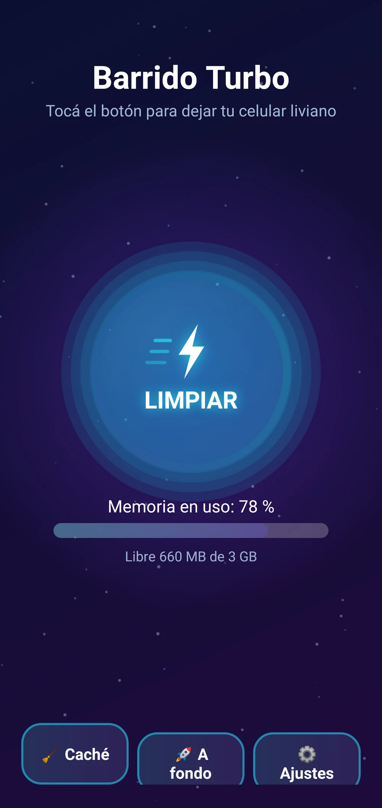
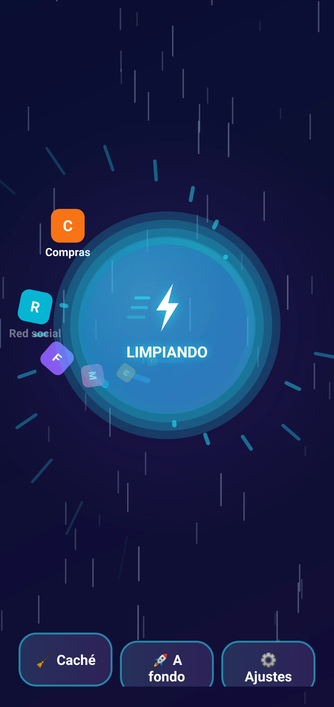
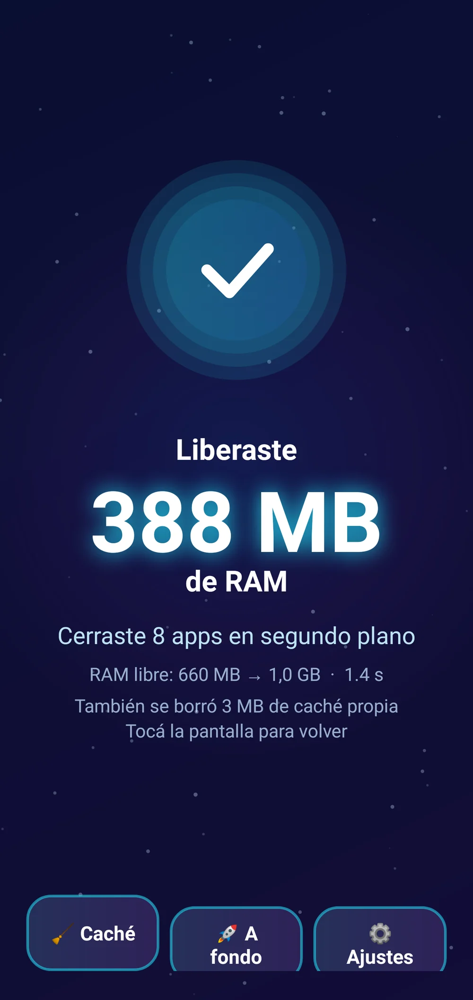
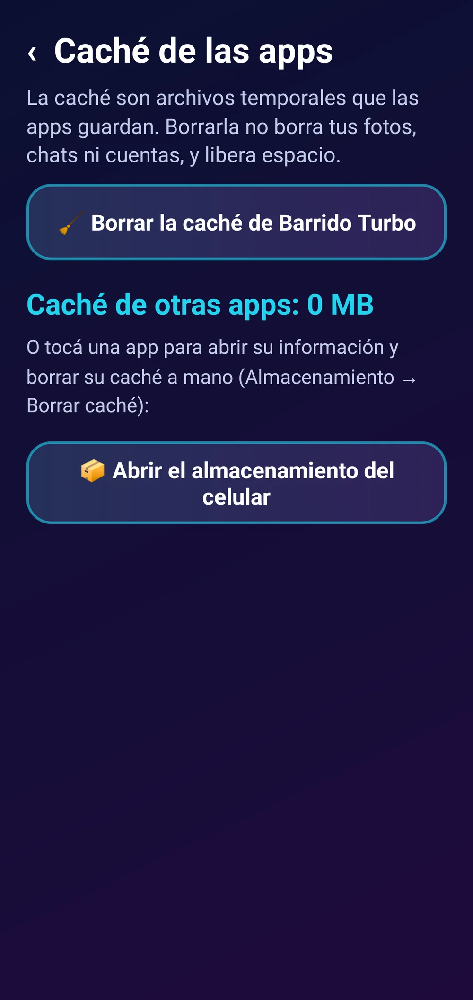
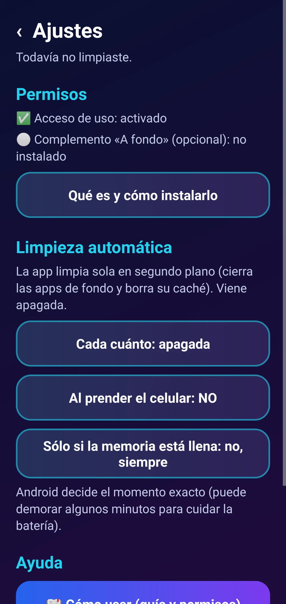
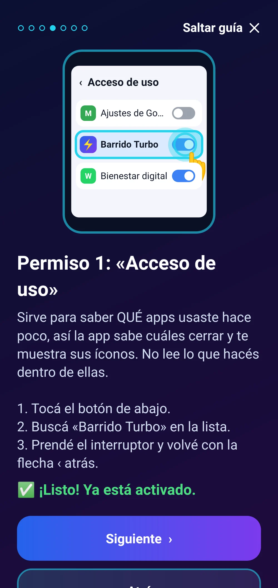
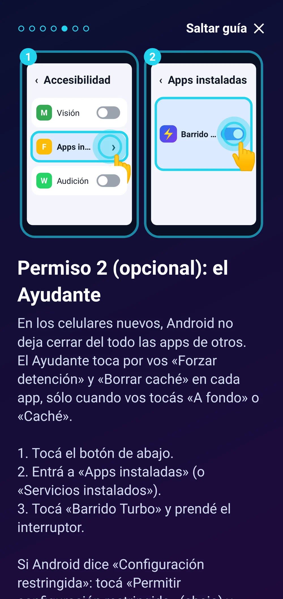

Barrido Turbo
¿Tu celular anda lento o se traba? Un toque cierra las apps que quedaron abiertas de fondo y borra caché.
Más que un limpiador de RAM: libera tu celular de las apps que quedaron abiertas sin que lo sepas.
Los números que muestra la app son mediciones reales de tu equipo; el resultado depende de lo que tengas abierto. Android puede volver a abrir algunas apps por su cuenta (por ejemplo, las que reciben mensajes).
Para celulares Android 9 a 14 (probado para Samsung A03 y similares).
 Un toque y tu celular, liviano
Un toque y tu celular, liviano

Un solo botón: LIMPIAR

Cada app abierta de fondo se va

Resultado (ejemplo: el número real lo mide tu celular)

Caché de cada app

Limpieza automática

Guía: te muestra dónde tocar

Ayudante opcional, explicadoLo que la hace distinta
- 👆 Un solo botón gigante. Sin menús raros ni palabras técnicas.
- 👀 Ves en pantalla cada app que se cierra: entendés qué estaba ocupando tu celular.
- 📏 Números reales, medidos antes y después. Nunca inventa megas.
- 🧹 Cierra apps de fondo y borra caché: puede ayudar a que ande más fluido.
- 🚀 Ayudante opcional para cerrar «a fondo» en celulares nuevos, explicado paso a paso.
- ⏰ Se limpia sola si querés: cada X horas, al prender o cuando la memoria está llena.
Qué es
Muchas veces el celular anda lento porque quedaron apps abiertas de fondo sin que te des cuenta: el navegador, videos, redes, juegos. Barrido Turbo las cierra con un solo botón grande, borra caché y te muestra cuánta memoria liberó, con números reales medidos por tu celular. Puede ayudar a que ande más fluido. Simple, en castellano y pensado para cualquier persona.
Qué hace
- Cierra las apps que quedaron abiertas de fondo y que no estás usando (navegador, videos, redes, juegos), con un solo botón.
- Mientras limpia, ves el ícono de cada app que se cierra; al final te dice cuánta memoria (RAM) se liberó y cuántas apps cerró. El número es real: lo mide tu celular antes y después, así que a veces es mucho y a veces poco.
- Borra su propia caché y te muestra cuánta caché tiene cada app; con el Ayudante opcional la borra de todas, o la borrás vos tocando la app.
- En los celulares nuevos (Android 10 o más), Android limita lo que una app puede cerrar. Por eso trae un Ayudante opcional (Accesibilidad) que toca por vos «Forzar detención» en cada app, sólo cuando vos apretás «A fondo».
- Limpieza automática opcional: cada 1, 3, 6, 12 o 24 horas, al prender el celular y/o sólo cuando la memoria está muy llena.
- Nunca toca apps del sistema, la pantalla de inicio, el teclado ni la propia app. No envía tus datos a ningún lado.
Requisitos
- Celular Android 9 a 14
- Permiso «Acceso de uso» (recomendado; la guía te lleva y lo detecta sola)
- Ayudante de Accesibilidad: opcional
- No necesita root, PC ni cables
Funciones
- Un solo botón grande: LIMPIAR (1–2 segundos)
- Ves cómo se va cada app que se cierra
- Resultado real: cuánta RAM se liberó y cuántas apps se cerraron
- Borra caché y muestra cuánta tiene cada app
- Ayudante opcional para cerrar «a fondo» en celulares nuevos
- Limpieza automática cada X horas, al prender o si la memoria está llena
- Guía ilustrada que te lleva a cada permiso
- Widget y atajo «Limpiar» en la pantalla de inicio
Cómo se instala
- Descargá el APK e instalalo (si Android pregunta, permití instalar desde el navegador).
- Abrila y seguí la guía ilustrada: te muestra dónde tocar en cada pantalla de Ajustes.
- En Android 13 o 14, si el Ayudante dice «Configuración restringida»: Ajustes → Apps → Barrido Turbo → ⋮ → «Permitir configuración restringida».
- Tocá LIMPIAR. Para comprar: «Activar» → «Comprar con Mercado Pago».
Novedades
- 1.0.0 — Primera versión.